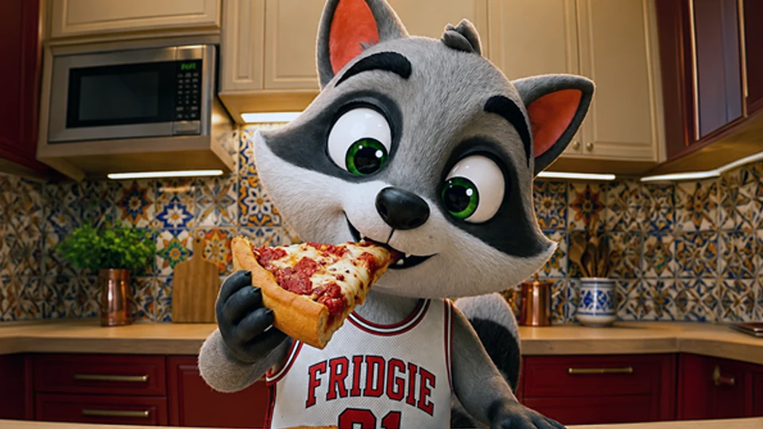
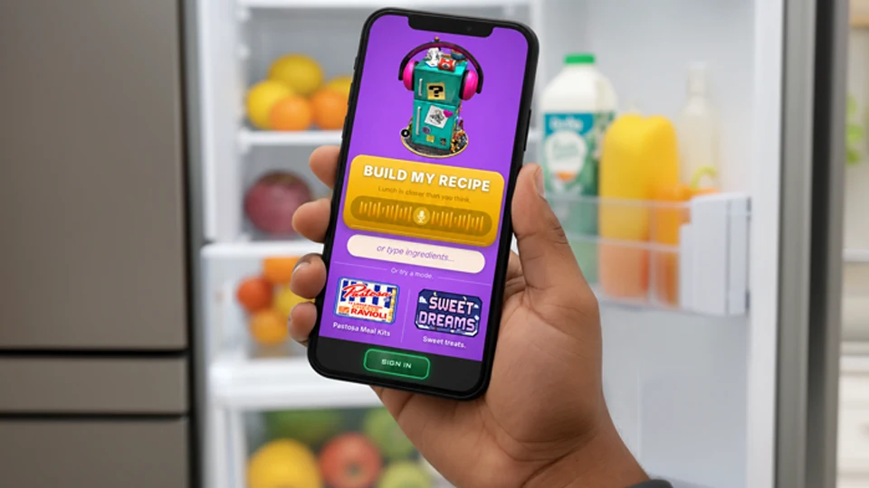
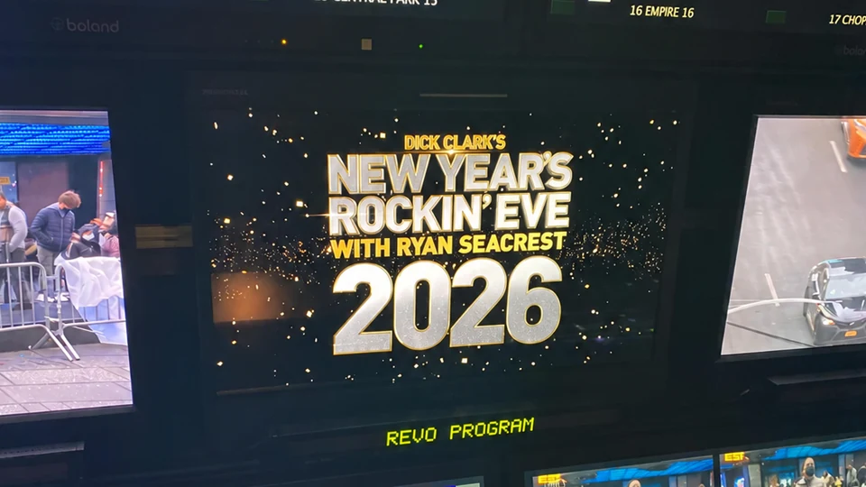
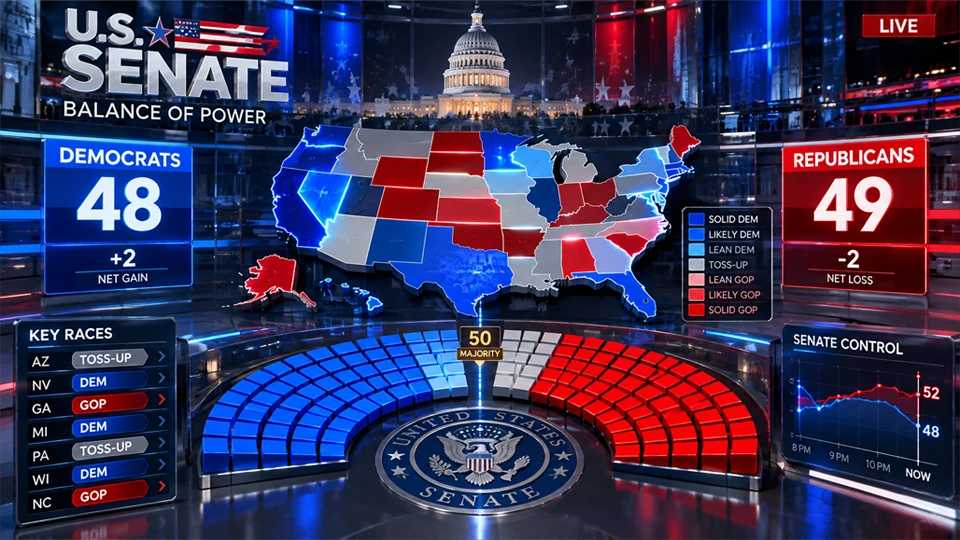
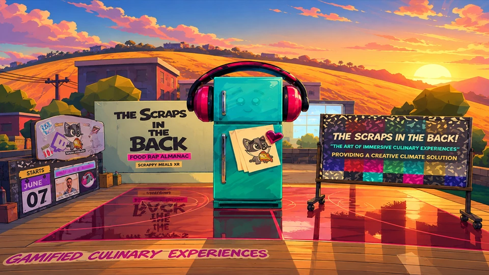
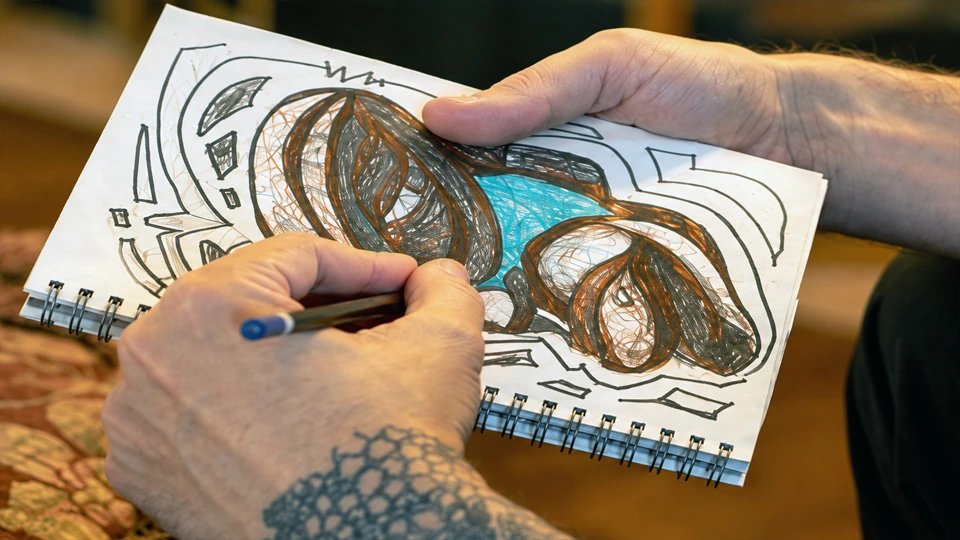
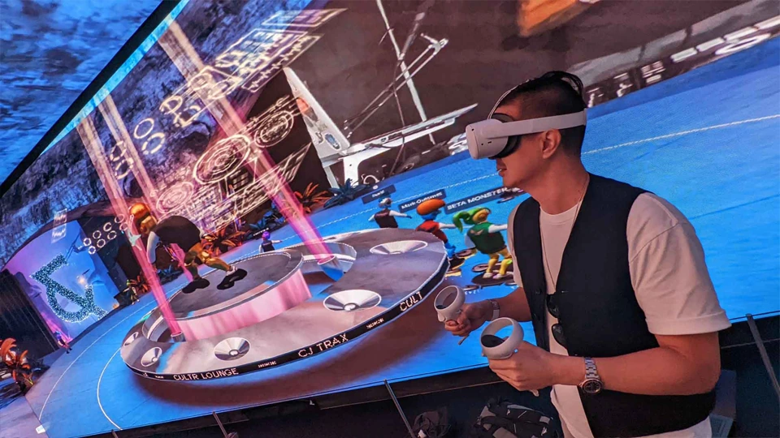
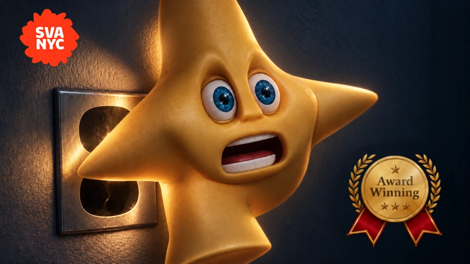

Scrappy MealsSustainable catering turned food ed tech.

Identity · Character · DigitalExplore project: Scrappy Meals ↗
I am a solutions architect who loves creative problem-solving under pressure.
Creative craft.
Real-world scale.
Fridgie Smalls users
New Year’s Rockin’ Eve
Creative & technical professionals trained
Original brands, useful products, live visual systems, and immersive experiences. Explore the ideas—and the work that makes them real.







I am a solutions architect who loves creative problem-solving under pressure.
Two decades of creative direction, real-time systems, and hands-on product building.
Selected consulting engagements and founder-led work run concurrently with later operating roles.
eFUNDEX
Sales technology, customer experience, AI-assisted workflows, and financial technology for small businesses.
Scrappy Meals / Scrappy Meals XR / Fridgie Smalls
Sustainable catering turned food ed tech: food-waste education, original IP, live experiences, and AI/WebXR products.
Damon Versaggi Consulting / Strategic Client Work
Project-based creative direction, AR/MR, broadcast graphics, installations, and team training.
Tribune Media / PIX11 / WGN
Creative production and media operations across broadcast and digital environments.
SportsNet New York
Live sports graphics, control-room reliability, and team development.
Vizrt
Real-time 3D client solutions, demonstrations, training, and enterprise broadcast adoption.
SwivelMeta
Interactive Web3 experiences connecting digital worlds with Outernet London.
Cranfield University × Scrappy Meals XR
Remote experiential learning, creative technology mentorship, and collaborative production.
Strevi, Italy
Three weeks connecting XR, cultural interpretation, food, and communal creative practice.
Sports & live production
ESPN · NBA · MLB · SNY · YES Network · Marquee Sports Network · Amazon Sports
News, elections & broadcast systems
CNN · CBS · MSNBC · Tribune · PIX11 · WGN · Fox Business · Bloomberg
Independent products & immersive experiences
Scrappy Meals · Fridgie Smalls · The Metacheese · FRIDA001 · SwivelMeta · Outernet
BFA · 1999–2003
College thesis: The Nightlight—an award-winning film that led to my first professional job.
Watch The Nightlight ↗
Brooklyn-based creative director and creative technologist working across AI product design, real-time broadcast graphics, and immersive brand experiences.
Creative leadership from concept and visual identity through production, across physical and digital experiences.
Live visual systems for sports, news, elections, and national entertainment productions.
Hands-on product design and development connecting messy inputs to useful interfaces and workflows.
Brand experiences spanning live events, virtual environments, spatial storytelling, and audience participation.
Team development, client enablement, and production systems built for reliable creative delivery.
Design, motion, collaboration, and emerging technology tools used across the practice.
Have a brand, product, or experience in mind? Let’s make it real.
WebXR, interactive 3D, remote participation, university interns, and virtual children's readings.
AI cooking utility evolved into character-driven children's entertainment and AI-assisted production.
Creative technology consulting for interactive Web3 experiences connecting digital worlds with Outernet London's large-scale physical and digital environment. The work connected concept, platform, audience participation, and a public-facing destination.
Fifteen years on one of television's largest live events, from graphics operator to lead graphics and long-term consultant. In 2011, I redesigned the midnight countdown treatment that became the visual foundation for the show that followed.
Sixteen years translating complex live election data into real-time visual experiences presenters could explore and audiences could understand, across major national broadcast environments.
Selected for a three-week artist residency in October 2024, bringing together XR, spatial storytelling, food, and communal creative practice.
Vice President, Sales & Technology · January 2024–Present. Previously Product, Technology & Growth Advisor.
Support product, technology, growth, customer experience, marketing, and AI initiatives for a financial technology company serving small businesses.
Translate complex business requirements into clear customer experiences, digital workflows, communications, and scalable systems. Partner across leadership, sales, operations, marketing, technology, and customer-facing teams.
Sustainable catering turned food ed tech.
Founded Scrappy Meals in 2016. The practice grew from food and participatory cooking experiences into culinary education, original characters, interactive 3D, WebXR, and AI-powered consumer products.
Created Scrappy Hour, bringing food, hospitality, live instruction, projection, and remote participation into a shared experience.